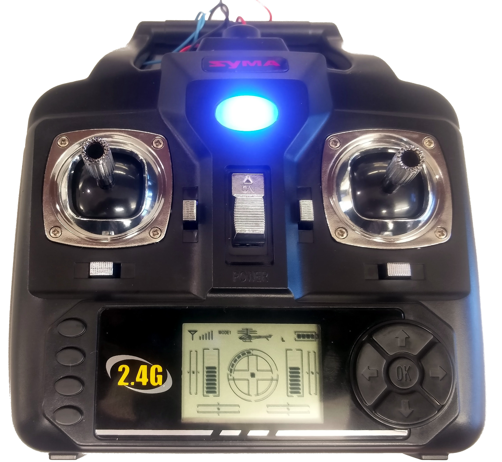
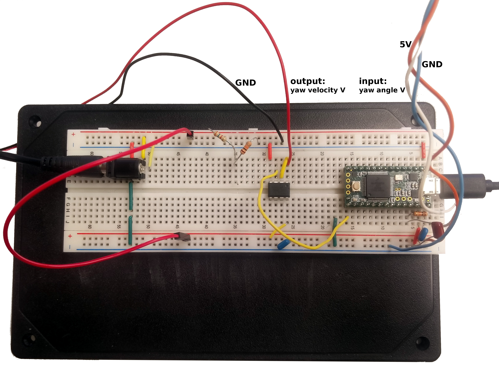

6.302 Midterm Project: Quadcopter Yaw Control
Youzhi Liang and Banti Gheneti
Introduction
The goal of the lab was to implement a feedback control system to control the yaw, rotation about the vertical axis, of a quadcopter. We supplied a voltage to adjust the remote control's yaw velocity signal and measured the angle of the quadcopter by mounting it on a potentiometer. We were able to reliably adjust the angle and maintain stability solely using proportional control.
The rig
A rig made out of legos mounts the quadcopter on the potentiometer. The main purposes of the rig are holding the horizontal alignent of the quadcopter, minimizing added rotational friction, and ensuring a strong coupling between the rotation of the quadcopter and the rotation of the potentiometer. The quadcopter is mounted by a series of legos and rods to the rotational axel. The rotational axel is supported by multiple moderately tight holes along its length. They maintain its straightness while not adding too much friction. The end of the axel is heatshrink wrapped to the potentiometer.

Figure 1: Lego rig with the mounted quadcopter.
Setting the yaw velocity
Wires soldered to joystick potentiometers control yaw velocity and measure lift. The yaw velocity of the quadcopter is set by a Teensy driving the yaw velocity potentiometer's output through a unity gain amplifier. The lift pontetiometer voltage is measured across trials to ensure consistency.

Figure 2: Quadcopter remote control.
Figure 3: Remote control board with control signal.
Measuring the yaw
By turning the quadcopter the voltage of the potentiometer it is mounted on varries between 0 and 5 Volts. We can measure the quadcopter angle by recording the potentiometer voltage with the Teeny and scaling it to between -180 and 180 degrees.

Figure 4: Breadboard with Teensy dev board and opamp buffering yaw velocity potentiometer voltage.
Proportional control
We are able to set the yaw using only proportional control. The system is very stable, although rise time is slow.
Figure 5:
Alternating quadcopter yaw between -60° and 60°.
Figure 6:
Remote control displaying rotation direction.
Plant Model
The plant can be modelled by two steps: thrust dynamics of the propeller and rotation dynamics of a
rigid-body with a light damping ratio. The thrust dynamics of the propeller can be modelled as a
first-order transfer function T(s)/V(s)= K_0/(tau_1*s+1). [1, 2] A similar propeller has already been
characterized in Lab 3, of which the time constant is about 0.11 s. The transfer function for the
rotation dynamics is
theta(s)/T(s)=1/((J*s+B)*s), in which J is the polar moment of inertia of the
copter and B is the damping ratio. We assume any parameter of the system is unknown. Using a
feedback loop with gain equal 1, the dominant closed-loop poles can be estimated from the step
response. The natural frequency is estimated to be 1.67 rad/s with a damping ratio of 0.8. Thus, the
plant transfer function can be characterized as the following. The step response for 120 degree
rotation angle with gain equal 1 is shown in Figure 7, suggesting a good agreement with the
experimental data.
Figure 7: Step response for a 120 degree rotation with gain equal to 1. Each point of the experimental data corresponds to the mean from three iterations of experiments.
Theoretical Controller Design
We apply loop shaping techniques to compensate this system. For the uncompensated system, the cross-over frequency is around 7.05 rad/s, resulting in a slow response. The goal is to decrease the rise time to 0.1 seconds or smaller. We apply a double-lead compensator C(s) to the system.
The Bode diagrams for uncompensated and compensated systems are shown in Figure 8. With the double-lead compensator, a cross-over frequency of 62.5 rad/s and a phase margin of 63.4 degrees are achieved.
Figure 8: Bode diagrams and step response for the uncompensated and compensated system.
References
[1] Yoon, M. (2016). A Transfer Function Model of Thrust Dynamics for Multi-Rotor
Helicopters. International Journal of Engineering Research and Technology, 5(1), 15-18.
[2] Hoffmann, G. M., Huang, H., Waslander, S. L., & Tomlin, C. J. (2011). Precision flight control for a
multi-vehicle quadrotor helicopter testbed.Control engineering practice, 19(9), 1023-1036.